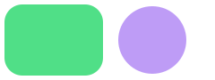
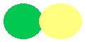

S1 EXACT slither.io logo path: offscreen 900x270 canvas -> shadowBlur 16 / shadowOffsetY 7 drawImage -> shown with CSS scale(.5)
S2 same as S1 but NO shadow
S3 shadow, canvas shown at 1:1 (no CSS transform), 450x135
S4 shadow of a plain rect on a transparent canvas (shadowBlur 16)
S5 S1 with the canvas opacity animated 0..1 (like lmc2.style.opacity = lga)
S6 S1 inside a position:fixed-like container with opacity .9 and scale(1.05)
A <img> PNG (like the slither.io logo)
B1 <img> PNG, RGB under transparent = BLACK
B2 <img> PNG, RGB under transparent = WHITE
B3 <img> PNG, RGB under transparent = RED
C CSS background-image PNG
D1 WebP (lossless, alpha)
D2 GIF (transparent index)
D3 SVG (semi-transparent shapes)

D4 palette PNG with tRNS

E alpha ramp 0..255 (red) over checker
F CSS rgba(0,0,0,.5) and opacity:.5
opacity .5 box
G backdrop-filter blur
H <img> in a promoted layer (will-change: transform)
I <img> with opacity .7 and drop-shadow filter
J1 canvas 2D drawImage(logo.png) onto a transparent canvas
J2 decoded pixel values (software readback via getImageData)
K1 WebGL canvas premultipliedAlpha:true, clear rgba(0,0,0,0) + half-transparent quad
K2 WebGL canvas premultipliedAlpha:false (same drawing)
K3 premult:true, OPAQUE quad (0,1,0,1)
K4 premult:true, context alpha:false (no alpha channel), quad (0,0.6,0)
K5 premult:true, quad (0.3,0.3,0.3,0.6) (grey, same alpha as K1)
K6 premult:false, OPAQUE quad (0,1,0,1)
K7 premult:true, clear rgba(1,0,0,.6) only (premult red, no draw)
K8 premult:true, quad (0,0.6,0,0.6) + preserveDrawingBuffer
K9 WebGL2 premult:true, quad (0,0.6,0,0.6)
K10 K1 inside a div with opacity .99
G1 backdrop-filter blur(6px) only (no overlay colour), SOLID blue background
G2 backdrop-filter brightness(1.6) (colour filter only), gradient
G3 plain filter: blur(3px) on a child element
G4 backdrop-filter blur(6px), square corners, over gradient
G5 backdrop-filter blur(20px), big radius, over gradient
G6 same as G over a SOLID grey page area (no gradient)